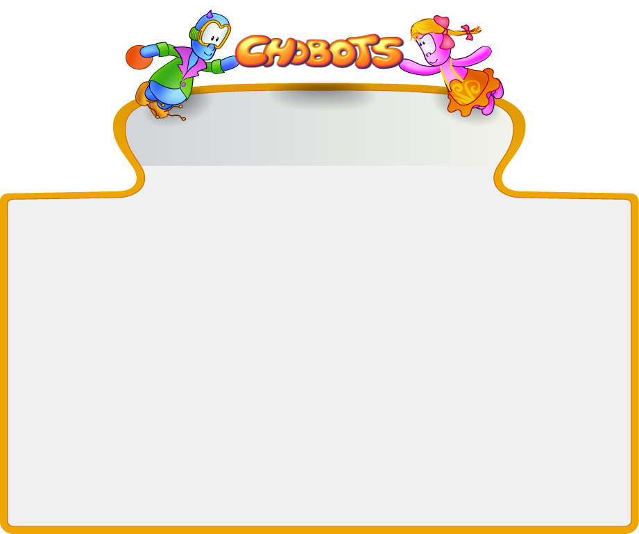

YOUR MAGIC WORLD

 play now
play now    alfaversion
Game guide
Help alfaversion
Game guide
Help

 What is
CHOBOTS
?
Гра «Чоботс» - це безкоштовна онлайн гра для дітей. У ній дитина зможе корисно та весело провести свій вільний час. Завдяки чату діти різних країн зможуть знайомитися та спілкуватися, а мультиплеєрні ігри дозволять новим друзям гарно розважитися. Місії, які у грі є основним джерелом заробітку виконують три функції: розвивальну, виховну та звісно ж розважальну. Розвивальна функція полягає в тому, що для того, аби досягти певного результату потрібно виконати у певній послідовності ряд дій, виховна – у тому, щоб дитина усвідомила необхідність заробляти гроші, які може потім весело потратити, а також високу мету місій – допомога сусідній планеті Земля. Тратити зароблені гроші можна купуючи одяг, магічні предмети та подарунки друзям.
What is
CHOBOTS
?
Гра «Чоботс» - це безкоштовна онлайн гра для дітей. У ній дитина зможе корисно та весело провести свій вільний час. Завдяки чату діти різних країн зможуть знайомитися та спілкуватися, а мультиплеєрні ігри дозволять новим друзям гарно розважитися. Місії, які у грі є основним джерелом заробітку виконують три функції: розвивальну, виховну та звісно ж розважальну. Розвивальна функція полягає в тому, що для того, аби досягти певного результату потрібно виконати у певній послідовності ряд дій, виховна – у тому, щоб дитина усвідомила необхідність заробляти гроші, які може потім весело потратити, а також високу мету місій – допомога сусідній планеті Земля. Тратити зароблені гроші можна купуючи одяг, магічні предмети та подарунки друзям. |